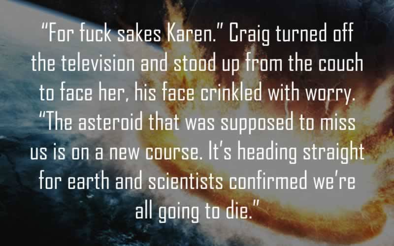
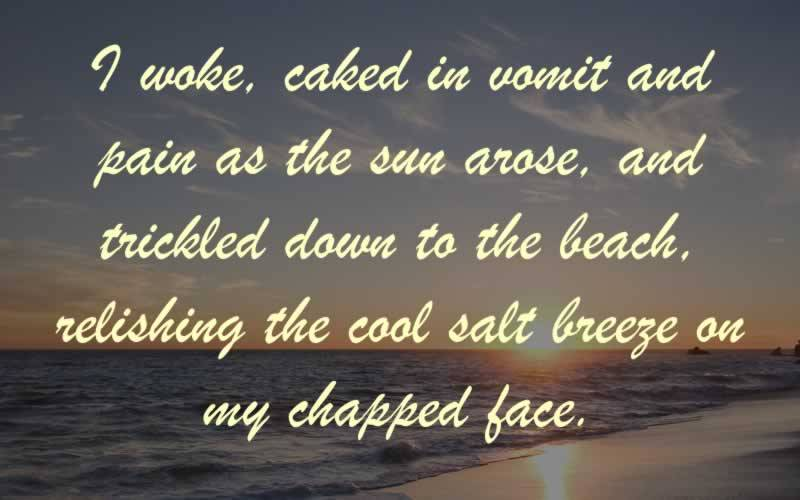

Actual quotes from published fiction. Names/titles omitted to protect the guilty.
Home Blogs How Did This Get Written?

“‘For fuck sakes Karen.’ Craig turned off the television and stood up from the couch to face her, his face crinkled with worry. 'The asteroid that was supposed to miss us is on a new course. It’s heading straight for earth and scientists confirmed we’re all going to die.’”

“I woke, caked in vomit and pain as the sun arose, and trickled down to the beach, relishing the cool salt breeze on my chapped face.”